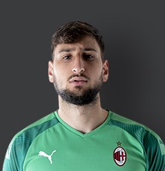

فريق ميلان
يلعب نادي إيه سي ميلان مبارياته الرسمية على ملعب سان سيرو فهو ملعب كرة القدم الرئيسي في مدينة ميلانو الإيطالية، ويعتبر من أجمل ملاعب العالم وأكثرها استيعاباً للجماهير حيث تصل طاقته الاستيعابية إلى 80,074 متفرج.[11] سمي الملعب على اسم أسطورة الكرة الإيطالية جوزيبي مياتزا والذي سبق وأن لعب لناديي مدينة ميلانو.[12] يعتبر نادي إنتر ميلان العدو اللدود والغريم التقليدي لنادي إيه سي ميلان، فيجمع بينهما أشهر ديربي في العالم يسمى بـديربي ميلانو (يسمى أيضا ديربي ديلا مادونينا و ديربي الغضب)، فهو يمثل ديربي خاص بين فريقين سبق وأن حصدوا مجتمعين 10 بطولات دوري أبطال أوروبا، و 38 بطولة دوري محلي. فهو ملعب كرة القدم الرئيسي في مدينة ميلانو الإيطالية، ويعتبر من أجمل ملاعب العالم وأكثرها استيعاباً للجماهير حيث تصل طاقته الاستيعابية إلى 80,074 متفرج.[11] سمي الملعب على اسم أسطورة الكرة الإيطالية جوزيبي مياتزا والذي سبق وأن لعب لناديي مدينة ميلانو.[12] يعتبر نادي إنتر ميلان العدو اللدود والغريم التقليدي لنادي إيه سي ميلان، فيجمع بينهما أشهر ديربي في العالم يسمى بـديربي ميلانو (يسمى أيضا ديربي ديلا مادونينا و ديربي الغضب)، فهو يمثل ديربي خاص بين فريقين سبق وأن حصدوا مجتمعين 10 بطولات دوري أبطال أوروبا، و 38 بطولة دوري محلي.يُعتبر إيه سي ميلان من أنجح الأندية في العالم حيث حصد 18 لقباً على مستوى القارة الأوروبية وعلى مستوى العالم متساوياً مع بوكا جونيورز، حيث حقق الميلان لقب دوري أبطال أوروبا 7 مرات، متأخراً عن ريال مدريد بسبعة ألقاب،[15] وفاز بلقب كأس العالم للأندية، أو كما كان يُسمّى قديماً «كأس الإنتركونتيننتال»، 4 مرات متملكاً الرقم القياسي،[16] وقد حصد الرقم القياسي أيضاً في الفوز بلقب كأس السوبر الأوروبي، حيث فاز به 5 مرات،[17] بينما فاز مرتين بلقب كأس الكؤوس الأوروبية [18] ليصبح إجمالي بطولاته القارية 18 ورابع أكثر الأندية فوزاً بالبطولات القارية.[19] أما من ناحية التصنيف الأوروبي فيحتل المرتبة الرابعة والخمسين على مستوى الفرق الأوروبية، وفقاً لتصنيف الاتحاد الأوروبي لكرة القدم، معتمدا على النتائج التي حققها في المسابقات الأوروبية في السنوات الخمس الأخيرة.[20]
تشكيلة الفريق
- الحارس:
- الدفاع:
- الوسط:
- الهجوم:
